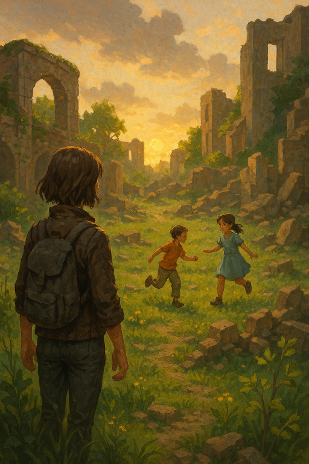

A másik tested – a kivetülés – lassan szertefoszlik, mint a köd a hajnal első sugarára. De nem hagy űrt maga után. Benned él tovább, minden emlékével, minden fájdalmával… és minden szeretetével is.
A kezeidben fény lüktet. A Füst többé nem fertőzés, hanem eszköz. Lassan, lágyan gyógyítod vele a földet. A torz testek újra egészségesekké lesznek, az elmebeteg túlélők elméje kitisztul. A romos városokban újrakezdés szikrája lobban.
Az emberek először félnek tőled. De amikor meglátják, mit teszel – nem uralni, hanem építeni – követni kezdenek. Nem, mint vezért. Mint reményt.
Rae, a 42-es alany, a Füst hídja… az új világ első köve.
